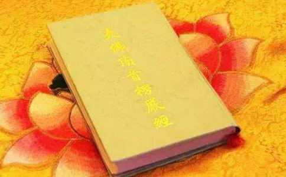

宣化上人是近代禅宗大成就者虚云老和尚的最亲弟子，更是沩仰宗第九代传人。宣公自身以禅修为主体，但却以净土念佛之妙法来方便度众，这也是佛陀当初所予页言的，那就是于末法恶世之时，净土法门之修持将会兴盛与普及。故禅修大德，也常以念佛法门来接引众生。
虽然宣化上人常以观/音*法*门及念佛法要来接引佛弟子，但毕竟宣化上人师承虚云老和尚（沩仰宗八祖），因此也是位禅宗的祖师爷。而楞严经可说是禅宗的镇山之宝，楞严经中的“楞严咒”，则更是咒中之王，含妙定、大定、究竟果觉，纵使散心修持，亦有八万四千金刚护法神常随护持及保祐。
楞严经是如来的真正佛智之代表，人间有楞严经住世，亦即代表佛陀正法常住人间。而常持诵楞严咒之佛弟子，更可消除宿世业障，来生七世皆能大富大贵，若欲三业清净、求出世果，因修楞严咒之故，所以不需三大阿僧祇劫，亦能成就。
宣化上人开示楞严经
释迦正法之住世（楞严经）
明朝禅宗大成就者憨山大师曾经说过：“不读法华，不知如来救世之苦心。不读楞严，不知修心迷悟之关键。”而楞严经无法不备，无机不摄，乃是一代法门的精髓，成佛做祖之正印。所以宣化上人常告诫当今参禅修道之人，必须要熟读及研究此经，因而才能明白五十种阴魔的魔境，禅修才不会走火入魔的。
当今台湾以禅宗、禅七、禅功、印心禅为号召的道场四处林立，而修禅之人如果境界认识不清，或贪求神通，或执着禅修所产生的任何幻听幻觉或觉受等等，终究会落入狂禅、文字禅、口头禅、大我慢禅，这便容易入魔境而为魔王眷属，所以读者大德们便要小心了。
接下来，笔者就为您节录宣化上人对楞严经的来源，与提醒现今参禅学佛之人所作的珍贵开示，希望大家广为流通及告知您的亲友（请大家告诉大家）。
古时在印度，楞严经被列为国宝，禁止输出国外，凡是出境者，皆严格检查，深恐此经流出。海关对出境的僧人，特别注意。当时（唐朝时代）印度有位高僧，名叫般剌密谛三藏法师，他费尽心思，想尽办法，将楞严经藏在臂内，瞒过检查人员，带到中国，从广州登陆。此时，有一位被武则天女皇所贬的宰相房融，在广州做太守，乃请般剌密谛法师翻译此经，而他为润笔，成为文学的巨著，并献于武则天。因为当时有大云经伪造的风波，故武则天将此存在宫中，没有流通。后来神秀禅师为国师时，在宫中受供养。有一天，发现此经，认为对于禅宗有价值，乃流通于世，这时，中国才流通楞严经。据传说楞严经是最后来到中国，但在末法时代，楞严经最先毁灭。其他经典，也渐渐被毁灭，到最后，只剩下一部弥陀经（指大本的弥陀经，及即无量寿经）。
在佛教里，所有的经典，都很重要，唯独楞严经更为重要。凡是有楞严经所在的地方，就是正法住世。楞严经没有了，就是末法现前，所有的佛教徒，必须拿出力量，流血流汗来拥护这部楞严经。
在法灭尽经上说：“末法时代，楞严经先灭。其余的经典，逐渐而灭。”如果楞严经不灭，正法时代就现前。因此，我们佛教徒，必须以性命来护持楞严经，以血汗来护持楞严经，以志愿来护持楞严经。令楞严经永住于世，发扬光大，流通到每粒微尘中，到全世界每个角落去，流通到尽虚空、遍法界中。如果能这样，正法就能大放光明。
为什么说楞严经先灭？因为该经所讲的道理太真实啦！天魔外道受不了，所以用种种方法来破坏、来消灭它。首先造出谣言，说楞严经不是释迦牟尼佛金口所说的经，而是后人伪造的经，所以楞严经是假的，是伪经。这是外道强辞夺理的说法，故意破坏真经的卑鄙手段。
楞严经是佛的真身，楞严经是佛的舍利，楞严经是佛的塔庙。楞严经的内容，说明四种清净明诲，二十五圣各述圆通，五十阴魔的境界。好像照妖镜，使旁门外道原形毕露，妖魔鬼怪无处藏身，他们为着自身的安全，乃大事宣传楞严经是伪经，不可相信。
一般无知无识的人，没有辨别真伪的智慧，人云亦云，助纣为虐，硬说楞严经不是佛说。主要的原因，楞严经所讲的道理，既正确，又合理，妖魔鬼怪、旁门左道，无法遁形，为自身的利益，不得已使出这种卑鄙的手段来破坏。这种作法，必堕地狱。
近年来，无智的学者，愚痴的教徒，对佛教不认识，对佛学不了解，在一知半解之情形下竟妄测圣言，乱加批评，发表谬论，言之无物，令人作三日呕。
学佛法的人，要深深了解楞严经的道理，所以要到处提倡楞严经，要到处宣扬楞严经，要到处解说楞严经，要到处护持楞严经。为令正法久住于世，为令邪法永息于世，这是佛教徒应该尽的责任。
我（宣化上人）今天向大家提出保证，保证楞严经是真经。如果楞严经是伪经，我愿堕地狱，因为我对佛法不认识，以假当真，心甘情愿接受此种的果报。若楞严经是真的，我仍发愿，生生世世要弘扬楞严大法，要宣讲楞严真理。各位想一想，楞严经若不是佛说的，谁能说出这种正确的法？我盼望批评楞严经是伪经的人，赶快忏悔，痛改前非，否则，必定堕入拔舌地狱。我祈祷预祝念楞严经的人，讲楞严经的人，宣扬楞严经的人，流通楞严经的人，统统早成佛道。
读者们看完了上述宣化上人对楞严经“真伪”所作之澄清后，大家更要相信如来的智慧宝藏了，而楞严经中的“楞严咒”更是三宝弟子、出家僧尼应当发愿修持的，于佛寺中，早课时也常会诵楞严咒的。而宣化上人几十年来也是常常修持楞严咒，故笔者节录宣化上人对于楞严咒的修持功德、心得及其殊胜利益之开示，请大家细心详阅哦！
宣化上人开示楞严咒
有楞严咒就有正法（宣化上人开示）
楞严咒的名字叫“摩诃萨怛多般怛啰陀罗尼”，又叫“摩诃萨怛多般怛啰无上神咒”。“摩诃”为梵语，译为大，体、相、用皆大，体遍十方，尽虚空、遍法界是其大用。说到相，它是没有相的，咒有什么相呢？但无相无不相，也可说它没什么用，但无所不用，尽虚空、遍法界无所不用。这用是大用，相是大相，体是大体，这便是摩诃之意。“萨怛多”亦是梵语，译为白色，亦即清净、没有染污之义，所以说：“相绝诸染曰白。”楞严咒是白净法，清净无染污之法。
“般怛啰”亦是梵语，译为伞盖。这是个譬喻，譬喻一个伞盖用荫万物，荫护一切有德的人，谁有德行，谁便能遇到这个法，没有德行是遇不到这种法的，所以说：“三光普照透三才。”一般人一定认为“三光”是日月星，日月星是外边的三光，诵持楞严咒身上有身光，口里有口光，心里有心光，身口意三业都放光，听说过这个吗？身上所放的是黄光，修成功了而成金光，金光万道。开始修楞严咒是黄光，淡黄色的，久而久之就变成金光，所以说紫磨金色万道光明充满法界，这都是修楞严咒修成的。
口里所放的光是红光，心里所放的光是白光。但是有时口里也放黄光，有时又放青光，有时又放黑光，有时青、黄、赤、白、黑的光都会放，不过这是要修成了才会。
“般怛啰”即蕴荫万德，大白伞盖保护所有有德的、受持楞严咒的众生，所以说“三光普照透三才”，三才即天地人。“阎浮世界你不来”，在阎浮界你各处找不着，一定要受持楞严咒才能得到这种光。“大德大善能于得”，要有大德行大善才能得到此法门。“无德无善不明白”，若无德行，没有善功德，就是遇着了也会当面错过，失之交臂。看到金以为是铜，见到钻石以为是玻璃，见到楞严咒却认为是很普通的，没有什么，不知道宝！不知道妙！不知道楞严咒的功德是不可思议的！心光即意念，即第六识，不过你若不修行，什么用也没有，若修行便会放光。刚刚说的光还不只是身口意三业清净放出清净的光明，还有红光缭绕，你诵楞严咒自然就有红光缭绕，所以说“千朵红莲护住身”，红莲华放出的红光。“坐驹骑着墨骐麟”，在这科学的时代说这个，学科学的人会笑掉牙齿，不过这样也好，否则不笑掉牙，天天还在那里科学、科学的。“万妖一见往远躲”，什么妖魔鬼怪一见这法身千朵红莲护身的功德相，都往远躲。“济公法师有妙音”，诵楞严咒时又有紫光、白光旋转，为何一诵楞严咒，妖魔鬼怪不敢出来？因力量太大了。尽虚空、遍法界没有一个地方不是祥光瑞气到处弥漫，所以有人诵楞严咒就是补天地正气之不足。一人念楞严咒就有一人的力量，百人念楞严咒就有百人的力量，世上的妖魔鬼怪都会老老实实的。
楞严咒为咒中之王，亦是咒中最长的，这个咒关系整个佛教的兴衰。
世界上若一个人也不会念楞严咒，这世界就快毁灭了，因世上没有正法了。只有楞严经和楞严咒是正法中最要紧的一部经和一部咒，楞严经是为楞严咒而说，是解释楞严咒、赞叹楞严咒的。楞严经中结坛法一段经文说得很详细，要想详细知道可看看这一段经文。
楞严咒叫佛顶光明，是佛的顶上化身所说，所以是微妙不可思议的，每一句有每一句的用途，每一字有每一字的奥妙，都具足不可思议。“佛顶光明”就是表示咒的力量能破除一切黑暗，能成就一切功德，你若能受持楞严咒将来一定成佛，一定得无上正等正觉。离开咒文能念叫诵，对着咒文念叫读，若能常诵念楞严咒，可以消除宿世业障，这是楞严咒的妙用。何谓“无”？高明无极，光明到极点了，没有再超过这光明的。“上”是尊上莫等的上，没有再比这更尊贵更高尚了。“神”就是不可思议，也就是威灵叵测的意思。“咒”就是感应道交，它有一种力量，你念咒就有感应。